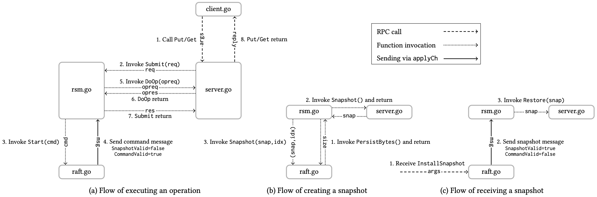
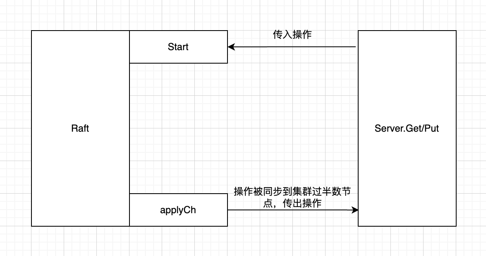
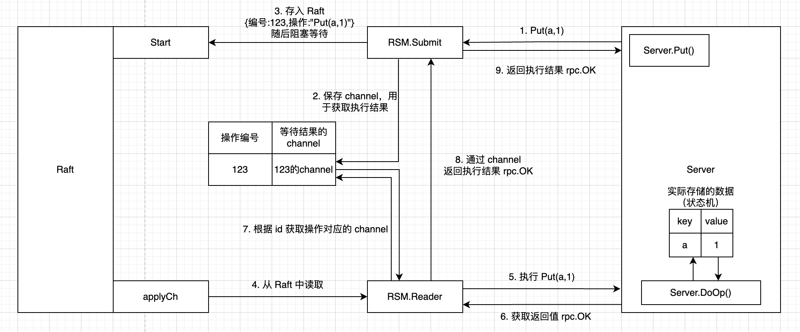

Lab4 Fault-tolerant Key/Value Service
思路
Lab4 将 Lab3（Raft）与 Lab2（单机键值服务）联系了起来，实现一个容错的分布式键值数据库。
课程提供了一张很清晰的 Raft 交互图，这次的实验需要紧紧围绕这张图实现。

实现
复制状态机 - 概念
什么是复制状态机（Replication State Machine）？维基百科的讲述很清楚。
我觉得关键在于复制状态机是一个「确定性」的状态机，正如原文所述：
在本文中，状态机必须具备确定性：多个相同状态机的拷贝，从同样的“初始”状态开始，经历了相同的输入序列后，会达到同样的状态，并且输出同样的结果。
基于「确定性」前提，Raft 通过「复制状态机」实现了「分布式系统的容错」。
复制状态机 - 实现
Lab4A 其实是在解决一个问题：在多个客户端并发请求的情况下，如何实现复制状态机？Students' Guide to Raft 中对此也有说明。
先考虑最简单的情况。如果只有一个客户端请求，很容易想到下面这个结构：

但如果多个客户端并发请求，则会遇到两个问题：
- 如何保证所有操作串行执行？
- 如何把结果路由给发起请求的线程？
为了解决这两个问题，我的实现思路如下：
- 维护一个 Reader Goroutine，监听 applyCh，读取 Raft 发来的命令，串行执行所有操作。
- 维护一个 Map，key 为操作的唯一标识符，value 为 channel。发起操作的线程创建 channel，将 channel 存储在 Map 中并进行监听，等待执行结果的返回。
- Reader 通过 Map 获取操作对应的 channel，将执行结果路由给发起操作的线程。
整体流程如下图所示：

无快照的键值服务
Client 与 Server 如何交互的核心逻辑在 Lab2 中已经实现了。
基于 Lab2 还需要解决两个问题：
- 依据交互图，Reader 通过 Server.DoOp() 操作状态机。因此需要把原本在 Get()、Put() 中直接操作 KV 数据的逻辑整合到 DoOp() 中。
- 如果 Client 请求到了一个不是 Leader 的 Server，Server 需要返回 ErrWrongLeader。Client 收到错误后，尝试请求另一个 Server，不断轮询，直到成功。
带快照的键值服务
KVServer 运行一段时间后，Raft 日志不断累积，不仅占用空间，而且崩溃重启的速度也会变慢。因此需要引入快照机制。
快照主要分为两个场景，创建与使用：
- Raft 日志累积达到阈值，Server 需要创建快照，使 Raft 截断日志并持久化快照。
- Server 崩溃恢复后，需要从 Raft 中读取快照，恢复数据到崩溃前的状态。
具体的时序图如下：
sequenceDiagram
participant R as Raft
participant R2 as RSM.Reader
participant S as Server
alt 创建快照（Raft 日志达到阈值）
Note right of R: Reader 照常接收并执行 Raft 发来的命令
R ->> R2: applyCh Command
Note over R2: 如果 Reader 发现 Raft 日志大小超过阈值
Note right of R2: 向 Server 发起快照请求
R2 ->> S: Snapshot()
Note over S: Server 将当前的 KV 数据序列化为字节数组
Note left of S: 将字节数组返回给 Reader
S -->> R2: return bytes
Note left of R2: Reader 调用 Raft 的快照方法，<br/>将快照数据作为参数传入
R2 ->> R: Snapshot(idx, bytes)
Note over R: Raft 截断被快照的日志，并将快照持久化存储
end
alt 接收快照（Server 崩溃后恢复）
Note over R: 崩溃恢复后，Raft 读取持久化的数据（包括快照）
Note right of R: 触发 applyCh 发送快照
R ->> R2: applyCh Snapshot
Note over R2: Reader 收到快照
Note right of R2: 调用 Server 的恢复方法
R2 ->> S: Restore(bytes)
Note over S: Server 将 bytes 反序列化为 KV 数据<br/>成功恢复到崩溃前的状态
endlab3
- 基本的 Raft
- 持久化（核心：类似 WAL，每当 Raft 需要被持久化的属性发生变化，就进行一次持久化）
- 快照（核心：快照和持久化的关系：快照是 Raft 的一个属性，也是要被持久化的。快照的具体内容是 server 层的 kv 数据）
lab2
- 版本号机制具体是什么，忘了
- 分布式锁怎么实现的，忘了
Guidance 中的很多内容也很实用，比如锁之类的东西
lab4 想要通过动画讲解，应该学一学怎么制作能够被插入到博客里的 Web 上的简易动画，就像 Hello 算法网站里的动画那样
lab5 听说比 lab3 还难，而且中间有好多论文呀
写 Lab 已经总结出经验了：
- 先梳理思路，代码怎么写，每个文件需要什么线程，什么方法，什么结构体。它们直接如何进行协作。这是在写代码之前就需要搞清楚的东西。
- 不仅是思路，程序、也就是代码的流程也要提前想清楚
- 思路梳理清楚后，写代码事半功倍。
- 报错了，自己痛苦 debug，或者 AI 偷懒解决。